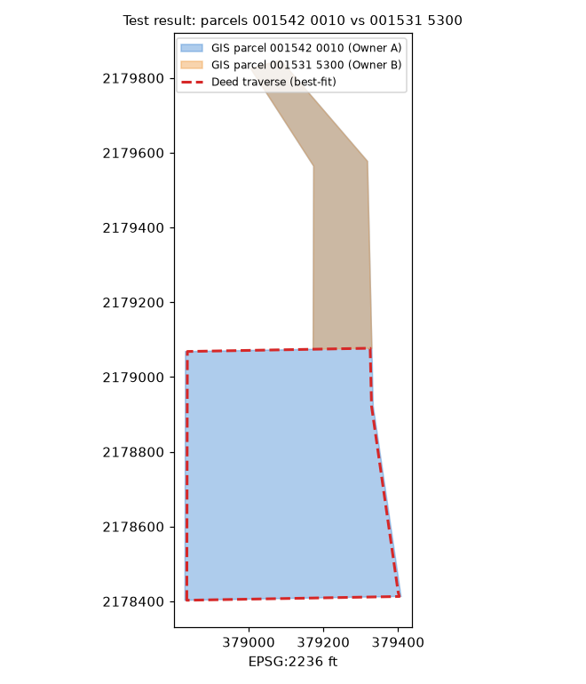

contained_parcel · deed-checked (test)
Owner A GIS polygon over-includes Owner B 001531 5300; cut Owner B from Owner A (contained_parcel: cut smaller from larger)
Proposed · test result · high · status: proposed (not applied, not a finding) · overlap 107875.71 sq ft
smaller parcel lies ~100% inside larger; stacked/un-carved parent polygon
Parcels & ORB references
| parcel | owner (PA) | ORB book-page |
|---|---|---|
| 001542 0010 | Owner A | 19870-00841, 17966-00196, 16276-02117, 12781-02349, 11954-01118, 10417-00883 |
| 001531 5300 | Owner B | 00056-00042, 11504-02030 |
Deed traverse · ORB 19870-841
—
Green = deed calls drawn segment by segment (best-fit placement, no monument tie); orange/red = GIS outlines.
Deed evidence
ORB 19870-841 (WD 2021, Owner A -> Owner A)
closure 1:353363 (misclosure 0.007 ft) · acres record cogo: 7.963 · acres record stated: 7.83 · acres gis Owner A: 10.59 · acres gis Owner B: 2.476
- ORB 19870-841 closes 1:353363 (misclosure 0.007 ft), COGO 7.963 ac vs stated 7.83
- Record fits GIS-minus-Owner B (8.11 ac) with IoU 0.981, Hausdorff 6.1 ft, zero rotation/shift
- Owner B inside record tract: 0%; GIS Owner A 10.59 = 8.11 + Owner B 2.48 ac
- Deed's 60 ft ingress/egress strip is an easement ('Together with'), not fee - consistent with excluding the northern strip
- Parent 17966-196 (3.41 ac, folio 001542-0100) closes 1:294k and lies within Tract 8
no monument/PLSS tie; placement is best-fit to GIS (it lands at 0,0 offset, which is itself corroborating)
Overlay figure

Figure generated from county GIS outlines and the best-fit deed traverse (no aerial basemap; parcel IDs only). Data quality test result, not authoritative.